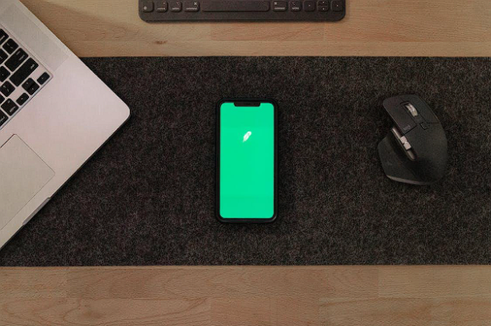

Are you looking for the latest PBA basketball betting bonuses and promos? You've come to
the right place!
This page
features the top sportsbooks and their perks and promos. We'll also discuss the
different bonus offers
waiting for you
when you sign up with one of the best sportsbooks in the Philippines. Keep reading to
learn more.
Use your bonus bets to wager on basketball bet types and increase your
chances of winning.
Navigation
name lastname
23.12.31
23.12.31
PBA Basketball Betting Offers & Details
In the following, we list the best PBA promo code, promotions, and bonuses from top PBA sportsbooks
online. Sign up and
follow the wagering requirements and other terms to claim your bonus.

Different betting bonuses and promos await PBA bettors
PBA betting is made easy by PNXBet, which offers a wide range of games for all punters and allows
Filipinos to bet on
their favorite teams, covering all the events and tournaments, such as the Commissioner's Cup and the
Governor's Cup.
Welcome Bonus
A 100% bonus awaits new players, but they must wager at least 100PHP. If your bet wins, you'll receive
50% of your
initial bet as a free bet up to 1000PHP. PNXBet doesn't implement any restrictions on free bets.
On the first deposit, players can also gain 100% of it in Philippine pesos. They should deposit at least
1200PHP.
Basketball bettors can also use a promo code when signing up. Follow the instructions before you can
claim your welcome
bonus.
PBA promotions
There is something for every type of bettor, including Filipino basketball punters. Players can receive
reload bonuses,
VIP promotions, and cashback offers.
The top PBA betting site is another reputable sportsbook for Filipino punters for its generous bonuses
and promotions.
Here's a quick look.
Welcome Bonus
Welcome deposit bonus can reach up to 7000PHP or as high as 18000PHP, which you can receive after signing
up and
completing all the steps required to bet the PBA games. The minimum deposit is 120PHP.
PBA promotions
New and loyal customers can expect a lot of rewards in store for them. Free bet bonuses, match bonuses,
cashback promos,
and no-deposit promos are also on offer.
Other promos include bonus bets on losing bets, 100% bet insurance, and Friday reload bonus. Special
Birthday Bonus and
Accumulator Bet Boost are other offers. Visit the site for updated promos daily.
Bet the PBA using 1xBet, and receive your bonus bets from the top PBA sportsbook as one of its offers. It
gives you the
best opportunities to increase your bankroll and win more.
Welcome Bonus
It is not just you get bonus bets from this site but also a welcome bonus when you join. The first
deposit can entitle
you to a first deposit bonus of up to 5400PHP.
PBA promotions
One of the best in terms of basketball promotion is from 1xBet. Aside from the welcome package from the
PBA betting
site, there are also promotion codes to activate and use other bonuses and promos for basketball
punters.
The promotions code allows you to claim exclusive rewards, promotional offers, and free bets. You can get
one from the
betting website itself. Other promos include birthday bonuses, such as free bets and a loyalty program.
PBA betting sites for basketball offer the best PBA betting bonuses and promos for Filipino punters. One
example is the
20Bet. When you qualify for the bonus, you can claim it to augment your bankroll.
Welcome Bonus
Sports bettors can claim a first deposit bonus of up to 5400PHP provided they complete and comply with
the applicable
terms and conditions. You can also use your bonus bets for free spins. The minimum deposit to join is
540PHP.
PBA promotions
A 50% second deposit bonus of up to 5400PHP and 50 free spins are also offered for Filipino punters. They
can also get
bonus bets in the form of Saturday Reload Bonus and Bettors Tournament, wherein you compete with other
customers to get
bonus bets.
This PBA betting site covers all the games and tournaments, including the PBA Finals and the PBA
Playoffs, giving more
chances for players to win more significant sums of money by placing more bets.
Welcome Bonus
Fund your account with the required amount, follow the terms and conditions, and claim the initial bonus
of up to
5800PHP or a 100% deposit match.
PBA promotions
Promos from the betting site are also plentiful aside from the bonus you receive when you join. There are
losing streak
bonuses and accumulator-of-the-day promos, too.
One of the favorites of Filipino players for PBA betting, GGBet has a lot in store for new and existing
customers.
Welcome Bonus
You can receive up to 12,000PHP when you join this betting site, but be sure to follow the terms and
conditions like a
minimum deposit of 600PHP.
PBA promotions
Bonuses and promotions are on offer to GGBet basketball customers, and some include holiday bonuses,
monthly bonuses,
and daily bonuses. Bet insurances are also on offer. Check their site for updated promos for PBA
punters.
This reputable site is another source of excitement for many bettors in the Philippines for its
interesting rewards
system.
Welcome Bonus
New players can enjoy a 100% welcome bonus, reaching up to 5000PHP, with a minimum 500PHP deposit upon
registration.
They can use this bonus to play and bet on their favorite basketball matches.
PBA promotions
Sports punters can expect a 1.2% cash rebate for wagering on sports like basketball. You do not need to
have a maximum
earnings requirement to claim it. Other promos include free bets, cashback bonuses, weekly bonuses,
referral incentives,
and other rewards.
Check out this sportsbook if you're looking for opportunities to receive generous bonuses and amazing
rewards in online
basketball betting.
Welcome Bonus
Make your first deposit and earn up to 8888PHP in bonuses to use in basketball bets.
PBA promotions
Reload bonuses, birthday bonuses, and other promotions are available at bet88 with terms and conditions.
Free spins for
old and new players are on offer. Check the site from time to time for updated promo updates.
Players looking for another sportsbook to claim bonuses can check out bet365, which doesn't set a strict
terms and
conditions to claim a particular bonus.
Welcome Bonus
The site offers a 100% match bonus reaching 660PHP with at least a 330PHP minimum deposit.
PBA promotions
Players can also use the free bet offers up to 3300PHP. Another promo includes an open account offer for
Filipino
players.
Pinnacle is a fantastic website for betting on PBA games for its numerous bonuses and rewards waiting for
Filipino
players.
Welcome Bonus
The welcome bonus is typically a match deposit bonus for this website. So after your first deposit, you
can receive a
portion of that amount back up to a capped amount set by the site.
PBA promotions
Reload bonuses, existing customer offers, no deposit bonuses, and exciting cashback incentives await
players. Loyalty
programs are also in place for loyal customers. Visit the sportsbook for the latest promos.
Last is MSW, which offers punters generous rewards and bonuses.
Welcome Bonus
New punters should collect 10,000PHP in settled bets within the first three months from their account
activation to
qualify for a welcome bonus of 500PHP.
PBA promotions
Birthday bonuses, odds boost promos, head-to-head hero bonus, and so on are available promos for
basketball bettors.
What are the types of bonuses you can receive from the sportsbook? The following explains the bonus types
for you.
Different types of basketball betting bonuses and rewards await new and old players.
Deposit match bonuses
These bonuses are available for players in the Philippines. A deposit match bonus for your account means
the sportsbook
matches the amount percentage you deposit with the bonus funds. Most sportsbooks will cap a specific
amount but are
subject to particular terms and conditions. 22Bet is one of the sportsbooks offering this bonus
for
Filipinos.
No deposit bonuses
Increase your chances to win the bets you place using a no-deposit bonus, allowing you to play without
putting in any
money. Try it for your first bet and have a chance to win real money with no risk attached.
Pinnacle offers this bonus.
Odds Boost
Using the account you made in the bookie for sports, you can also avail of the odds boost promotion.
This promo means
that the sportsbook online will improve the odds on a wager so that it becomes more exciting and
enticing for bettors.
Check out MSW for odds boost promos.
Odds Boost
Using the account you made in the bookie for sports, you can also avail of the odds boost promotion.
This promo means
that the sportsbook online will improve the odds on a wager so that it becomes more exciting and
enticing for bettors.
Check out MSW for odds boost promos.
The promotion equals a risk-free bet on your first bet that is on the site. For example, you can make the
first bet from
one to one thousand pesos, and it will be a winning bet if it wins. This means you can keep your money.
On the other
hand, you will be entitled to a bonus bet using the same amount you wagered if the bet loses.
GGBet and 1xBet offers
this to their new players.
First Bet Promo
Sports betting on basketball becomes more interesting with the first bet promo wherein if you lose in the
first bet, you
will get 100% of the wager back as a bonus bet, which is capped at a certain amount.
Bet and Get
Sports betting on basketball becomes more interesting with the first bet promo wherein if you lose in the
first bet, you
will get 100% of the wager back as a bonus bet, which is capped at a certain amount.
New Player Offer
There are many new players’ promos that sportsbooks offer their members with. One includes a welcome
bonus that you can
use with a promo code, but you need to comply with the site's terms and conditions. You can check the
specific
sportsbook of your choice for more new player promos.
Most, if not all, sportsbooks featured here give new players some
sort of bonuses like a welcome bonus.
First Bet
Many top sportsbooks offer the first bet promo for their new players placing the first-ever bet on their
site. In some
bookmakers, you can bet whatever amount you want to put in basketball, and that amount will be returned
to you if your
bet loses as bonus bets.
Second Chance
The PBA promos and bonuses from sportsbooks for Filipino players are available in many forms. One is the
second chance
bonus bets as a registration promotion. If you lose your first bet, the betting site will
give you
cashback through site
credits or bonus cash. Typically, the amount is equal to your first wager amount.
PBA Betting Promos FAQs
What are the best PBA sportsbooks?
Please start with the list we've given above. We've researched and tested each based on safety,
security, transparency,
and reliability.
Is PBA betting legal?
Yes, provided you’ll use licensed and legal betting sites where Filipinos are accepted
Can I bet on PBA games?
Yes, you can. You can choose from and bet on different bets, such as parlay, futures, and money
line bets.
How can I bet on PBA matches?
Look for and register with a reputable sportsbook, verify your account, and deposit funds into
it. Start betting and
enjoy! TIP: Start low and manage your bankroll.
What are the betting odds in basketball games in the Philippines?
The odds are not always the same, fluctuating occasionally based on factors like seasons and
players.
Second Chance
The PBA promos and bonuses from sportsbooks for Filipino players are available in many forms. One is
the second
chance
bonus bets as a registration promotion. If you lose your first bet, the betting site will give you
cashback through
site
credits or bonus cash. Typically, the amount is equal to your first wager amount.
Lovel Lovelo
Deposit and Withdrawal Methods
The PBA bookmakers should cater to Filipino players' typical deposit and withdrawal methods. These
include debit and
credit cards, e-wallets, money orders, and wire transfers. On the other hand, some sites accept Bitcoin,
Litecoin,
and
other cryptocurrencies. Choose a website that receives your preferred payment method to avoid
inconvenience.